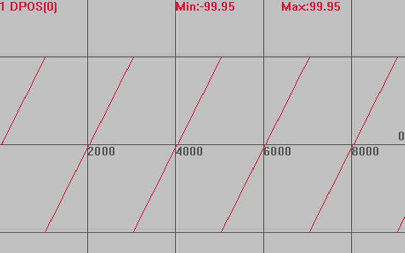
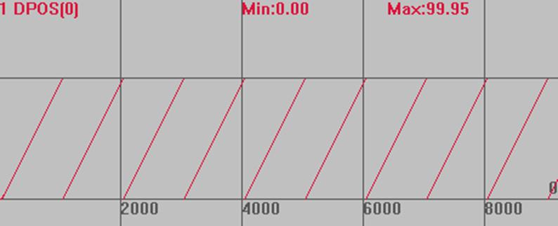

|
类型 |
轴参数 | |||||||||||||||
|
描述 |
坐标重复设置。
可用于限制凸轮主轴的坐标循环范围，来实现多条凸轮曲线连续。 使用绝对运动模式时，如果目标位置处于坐标循环范围内，可以正确运动；如果处于坐标循环范围外，运动不正确。 相对运动不受影响。 REP_DIST超过参数支持的最大数值，就会把REP_OPTION的bit4置1。 | |||||||||||||||
|
语法 |
VAR1 = REP_OPTION，REP_OPTION = opt opt：按位来表示不同的意义
| |||||||||||||||
|
适用控制器 |
通用 | |||||||||||||||
|
例子 |
BASE(0) '选择轴0 ATYPE=1 UNITS=100 '脉冲当量100 DPOS=0 '坐标清0 SPEED=100 '速度100units/s ACCEL=1000 '加速度1000units/s/s DECEL=1000 '加速度1000units/s/s REP_DIST=100 '设置坐标循环范围 REP_OPTION=0 '设置循环模式 TRIGGER '自动触发示波器 VMOVE(1) '持续运动
坐标曲线 DPOS(0)垂直刻度100  REP_OPTION=1 时 MSPEED(0)垂直刻度100  | |||||||||||||||
|
相关指令 |